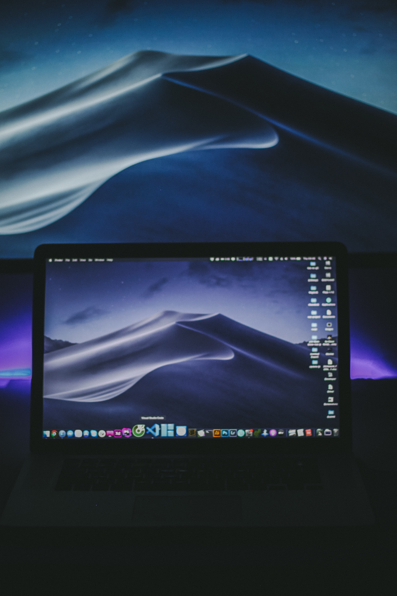

Projects While at Ada Developers Academy, I was able to work on a variety of projects, such as
"Viewing Party", where I had to work with nested data structures to obtain data for a group of friends. "Swap Meet" was an object oriented based program where I created a program to allow groups to find certain items they preferred and swap them with each other.
The most recent project, "Task-List-API" was a back end project where I used SQLAlchemy, Flask, and Python to create an API with RESTful routes for tasks and goals.
I also just learned about HTML and CSS, which is how I was able to create this website!
 If you would like to collaborate, hire me, or chat about music send me a message! Click here.